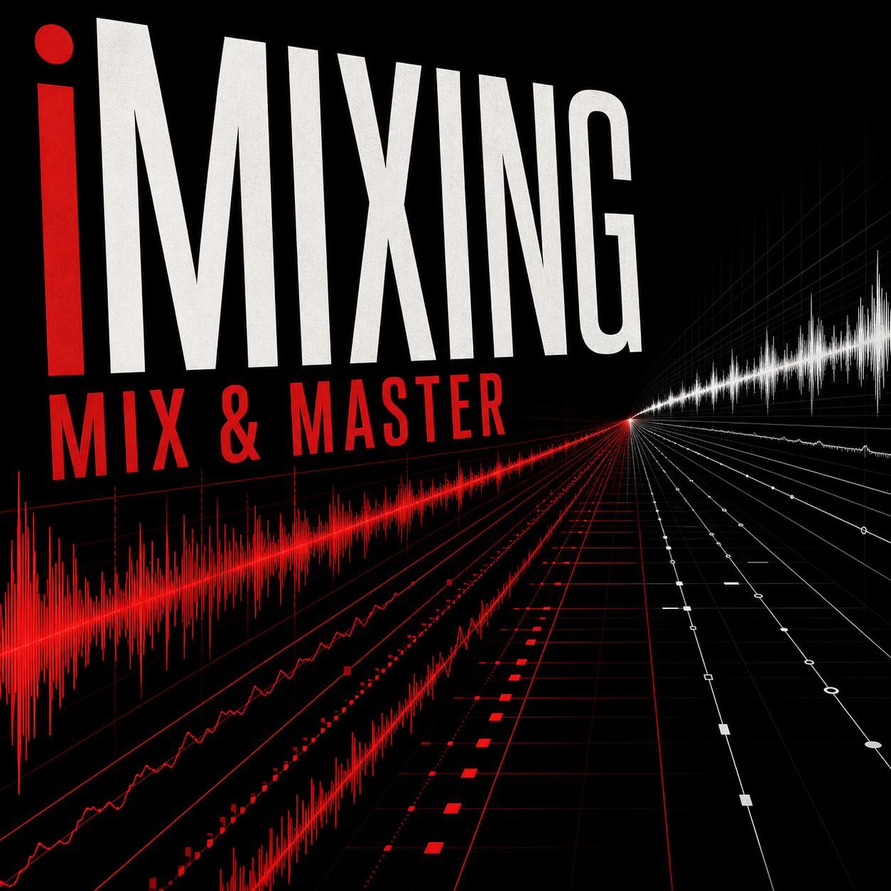

01
Upload
Bring WAV stems or a MIDI file into the workflow.
Turn rough stems and messy MIDI into cleaner, DAW-friendly results for the next production step.
iMixing is built for the moment when the song idea already exists, but the files still feel raw: stems fight each other, MIDI looks crowded, velocity feels unstable, and the demo is not ready to show.
Bring WAV stems or a MIDI file into the workflow.
Detect roles, levels, clipping, timing, density, and musical structure.
Clean balance, voicing, ranges, note lengths, and velocity.
Download a master draft, repaired MIDI, and readable reports.
The MVP combines a stem mixing pipeline with a MIDI cleanup engine. It is not a replacement for a producer or engineer; it removes the slow first technical layer before serious creative work continues.
Separated WAV stems are classified, analyzed, gain-staged, processed, summed into a stereo mix, and exported as a basic master draft.
MIDI files are repaired with style-aware rules for timing, voicing density, ranges, weak notes, velocity, and DAW-friendly export.

The public GitHub Pages preview is live as a product presentation. The interactive MIDI web app is prepared for Render deployment with a Python service and health check.